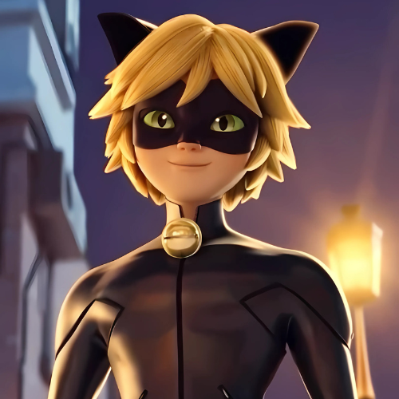
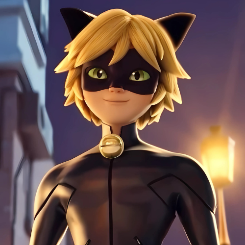
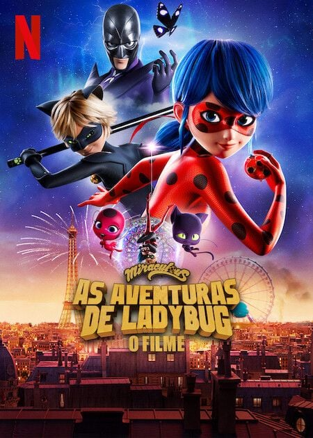

Sobre a Série
"Miraculous: Tales of Ladybug & Cat Noir" é uma série de animação em CGI franco-coreana criada por Thomas Astruc. Produzida por Zagtoon, Method Animation, Toei Animation e SAMG Animation, a série estreou em 2015 e rapidamente se tornou um fenômeno mundial.
A trama acompanha Marinette Dupain-Cheng e Adrien Agreste, dois adolescentes de Paris que se transformam nos heróis Ladybug e Cat Noir com a ajuda de joias mágicas chamadas Miraculous. Cada Miraculous é ligado a um Kwami, ser místico que concede poderes ao seu portador. Juntos, eles enfrentam vilões criados por Hawk Moth, que usa emoções negativas para corromper pessoas comuns.
Em 2025, a série celebra seu 10º aniversário com a 6ª temporada, que estreou em janeiro no Gloob (Brasil), TF1 (França) e Disney Channel (EUA). A nova temporada introduziu melhorias gráficas com a Unreal Engine e visuais atualizados dos personagens e da cidade de Paris.
Origem e Curiosidades
Origem da Série
- A ideia surgiu quando Thomas Astruc viu uma colega usando uma camiseta preta com bolinhas vermelhas. Ele criou o conceito da Ladybug como uma heroína francesa e inicialmente planejava publicá-la como história em quadrinhos.
- A personagem se chamava "Marietta" no projeto original. Com o tempo, o projeto evoluiu para uma animação 3D e ganhou apoio da Toei Animation, que ajudou na internacionalização da série.
- Em 2024, foi criada a Miraculous Corp., uma joint venture entre Mediawan (60%) e ZAG (40%), para administrar e expandir a franquia até 2030. A sede da empresa fica em Paris e o CEO atual é Andy Yeatman.
Curiosidades
- Os Kwamis são seres cósmicos que existem há bilhões de anos. Seus nomes têm letras duplicadas (Tikki, Plagg, Nooroo), e cada um está ligado a um conceito (criação, destruição, intuição etc.).
- Hawk Moth é a identidade secreta de Gabriel Agreste, pai de Adrien. Ele usa o Miraculous da Borboleta para tentar salvar sua esposa Emilie, que está em coma.
- A série já foi traduzida para mais de 35 idiomas, exibida em mais de 120 países e possui mais de 52 episódios planejados para 2025. As temporadas 7 a 10 já estão em desenvolvimento.
- Entre os novos projetos estão: o spin-off "Miraculous Chibi", o anime "Stellar Force" (em produção no Japão), o mangá oficial pela Kodansha e o "Livro de Receitas Oficial" com receitas inspiradas na série.
- Em 2025, foi inaugurada no México a atração imersiva "Miraculous: Ladybug & Cat Noir Adventure", com ambientes temáticos e experiências interativas para fãs.
- A série soma mais de 42 milhões de inscritos no YouTube, 250 milhões de downloads em aplicativos e mais de 700 milhões de visualizações no TikTok.
Personagens Principais
Marinette / Ladybug
Corajosa, criativa e determinada.
 

Adrien / Cat Noir
Filho de um estilista, gentil e protetor.
Hawk Moth
Manipula emoções negativas.
Tikki
Kwami da Criação.
Plagg
Kwami da Destruição.
Trailer
Confira o trailer oficial da série da 1° Temporada:

Temporadas, Filmes e Especiais
- 1ª Temporada (2015–2016): Início dos protagonistas e segredos dos Miraculous.
- 2ª Temporada (2016–2018): Novos heróis surgem, intensificando o plano de Hawk Moth.
- 3ª Temporada (2019): Evolução dos poderes e descobertas importantes.
- 4ª Temporada (2021): Marinette lidera como nova Guardiã.
- 5ª Temporada (2022–2023): Batalha final com Monarch e grandes revelações.
- 6ª Temporada (2025): A temporada estreou em 24 de janeiro de 2025 no Gloob (Brasil), 25 de janeiro no Disney Channel (EUA), e chegou ao Disney+ em julho de 2025.
- 7ª Temporada (em produção): Confirmada com 26 episódios, prevista para 2026.
- Especiais – Miraculous World:
- New York – United Heroez (2020)
- Shanghai – A Lenda de Lady Dragon (2021)
- Paris – As Aventuras de Shadybug & Claw Noir (2023)
- Londres – No Limite do Tempo (2024)
- Tokyo – Stellar Force (previsto para o final de 2025).
- Filme Netflix: Miraculous: Ladybug & Cat Noir – O Filme (2023)

Série Chibi
Miraculous Chibi é uma minissérie derivada com episódios curtos e estilo visual "super-deformado" (chibi). É focada no humor e no cotidiano exagerado dos personagens. Ideal para todas as idades e bastante popular no YouTube.

Produtos Oficiais e Jogos
Produtos Oficiais
- Action figures da Ladybug, Cat Noir e outros personagens
- Mochilas, cadernos, estojos e materiais escolares
- Roupas e fantasias temáticas
- Jogos de videogame e mobile (como “Miraculous Ladybug & Cat Noir”)
- Livros e quadrinhos
- Pelúcias dos kwamis como Tikki e Plagg
Jogos de Miraculous
A franquia Miraculous: As Aventuras de Ladybug e Cat Noir também ganhou destaque no mundo dos games! Veja os principais títulos lançados:
- Lançamento: 25 de outubro de 2022
- Desenvolvedora: Magic Pockets
- Publicadora: GameMill Entertainment
- Plataformas: Switch, PS4/5, Xbox One/Series, PC
- Destaques: Coop, Paris explorável, vilões icônicos.
- Lançamento: 25 de outubro de 2024
- Desenvolvedora: Petit Fabrik (Brasil)
- Publicadora: GameMill Entertainment
- Plataformas: Switch, PS4/5, Xbox One/Series, PC
- Destaques: Parkour, coop, heróis aliados e trajes da 6ª temp.
Esses jogos oferecem experiências imersivas com Ladybug e Cat Noir, combinando ação, aventura e o charme da série.
Mangá
A franquia ganhou uma versão em mangá publicada inicialmente no Japão e depois em outros países. A arte segue o estilo tradicional japonês e traz novas aventuras dos personagens, sendo um material extra apreciado por fãs do estilo.

Comunidade, Fandom e Avaliação Geral
Miraculous possui uma comunidade ativa de fãs, que produzem fanarts, fanfics, cosplays e teorias. Páginas como Miraculous Brasil no Instagram e grupos no Facebook e Twitter contribuem para manter o fandom engajado.
A série é muito bem avaliada pelo público infantojuvenil. Em plataformas como IMDb e Rotten Tomatoes, Miraculous recebe notas positivas pela sua animação, diversidade e desenvolvimento de personagens.